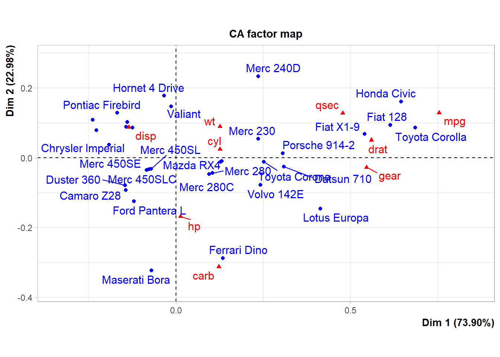
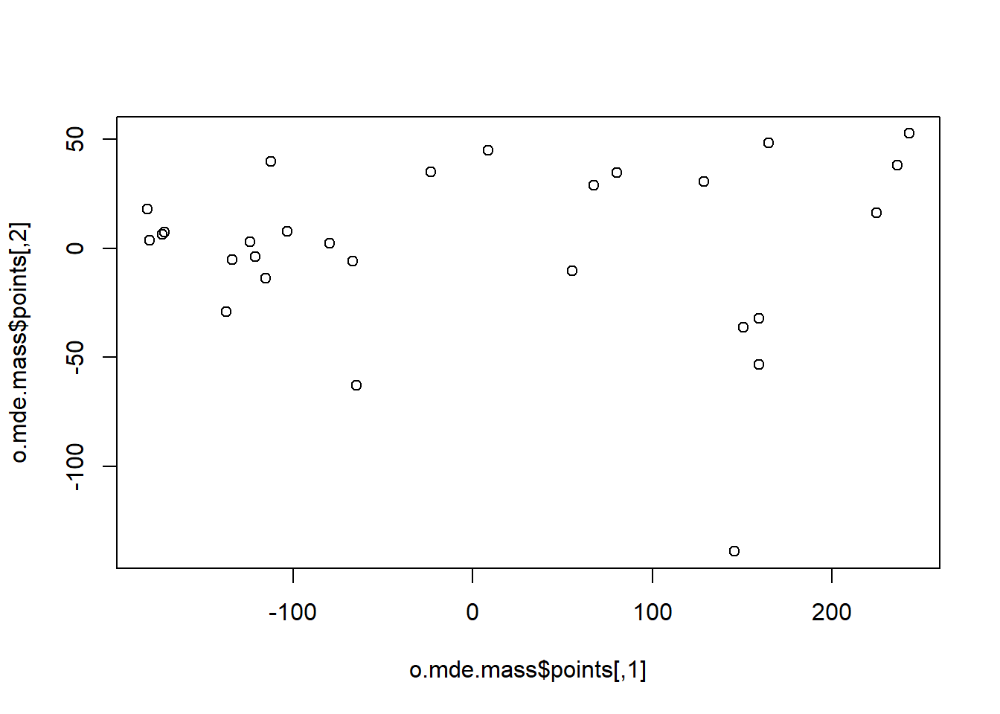
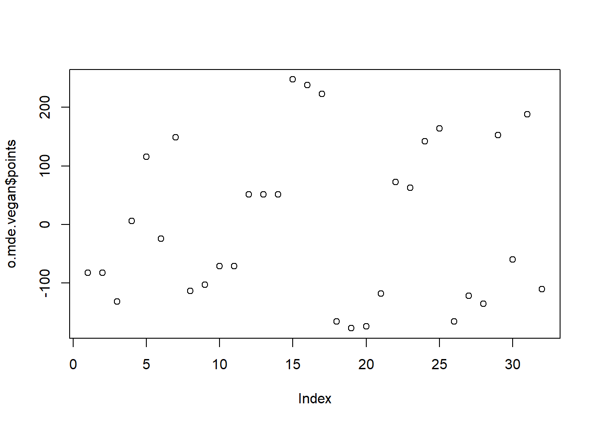
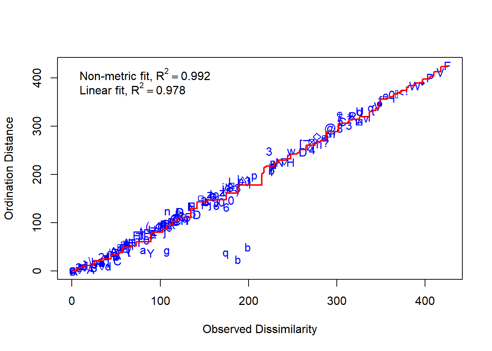

# Mit Beispieldaten aus Wildi (2013, 2017)
library("labdsv")
library("dave") # lade package für Daten sveg
## Error in library("dave"): there is no package called 'dave'
head(sveg)
## Error in head(sveg): object 'sveg' not found
str(sveg)
## Error in str(sveg): object 'sveg' not found
# View(sveg)
# PCA-----------
# Deckungen Wurzeltransformiert, cor=T erzwingt Nutzung der Korrelationsmatrix
o.pca <- labdsv::pca(sveg^0.25, cor = T)
## Error in prcomp(mat, retx = TRUE, center = TRUE, scale = cor): object 'sveg' not found
o.pca2 <- stats::prcomp(sveg^0.25)
## Error in stats::prcomp(sveg^0.25): object 'sveg' not found
# Koordinaten im Ordinationsraum => Y
head(o.pca$scores)
## Error in head(o.pca$scores): object 'o.pca' not found
head(o.pca2$x)
## Error in head(o.pca2$x): object 'o.pca2' not found
# Korrelationen der Variablen mit den Ordinationsachsen
head(o.pca$loadings)
## Error in head(o.pca$loadings): object 'o.pca' not found
head(o.pca2$rotation)
## Error in head(o.pca2$rotation): object 'o.pca2' not found
# Erklaerte Varianz der Achsen (sdev ist die Wurzel daraus)
# früher gabs den Befehl summary()
# jetzt von hand: standardabweichung im quadrat/totale varianz * 100 (um prozentwerte zu bekommen)
E <- o.pca$sdev^2 / o.pca$totdev * 100
## Error in eval(expr, envir, enclos): object 'o.pca' not found
E[1:5] # erste fünf PCA
## Error in eval(expr, envir, enclos): object 'E' not found
# package stats funktioniert summary()
summary(o.pca2)
## Error in summary(o.pca2): object 'o.pca2' not found
# PCA-Plot der Lage der Beobachtungen im Ordinationsraum
plot(o.pca$scores[, 1], o.pca$scores[, 2], type = "n", asp = 1, xlab = "PC1", ylab = "PC2")
## Error in plot(o.pca$scores[, 1], o.pca$scores[, 2], type = "n", asp = 1, : object 'o.pca' not found
points(o.pca$scores[, 1], o.pca$scores[, 2], pch = 18)
## Error in points(o.pca$scores[, 1], o.pca$scores[, 2], pch = 18): object 'o.pca' not found
plot(o.pca$scores[, 1], o.pca$scores[, 3], type = "n", asp = 1, xlab = "PC1", ylab = "PC3")
## Error in plot(o.pca$scores[, 1], o.pca$scores[, 3], type = "n", asp = 1, : object 'o.pca' not found
points(o.pca$scores[, 1], o.pca$scores[, 3], pch = 18)
## Error in points(o.pca$scores[, 1], o.pca$scores[, 3], pch = 18): object 'o.pca' not found
# Subjektive Auswahl von Arten zur Darstellung
sel.sp <- c(3, 11, 23, 39, 46, 72, 77, 96, 101, 119)
snames <- names(sveg[, sel.sp])
## Error in eval(expr, envir, enclos): object 'sveg' not found
snames
## Error in eval(expr, envir, enclos): object 'snames' not found
# PCA-Plot der Korrelationen der Variablen (hier Arten) mit den Achsen
# (hier reduction der observationen)
x <- o.pca$loadings[, 1]
## Error in eval(expr, envir, enclos): object 'o.pca' not found
y <- o.pca$loadings[, 2]
## Error in eval(expr, envir, enclos): object 'o.pca' not found
plot(x, y, type = "n", asp = 1)
## Error in plot(x, y, type = "n", asp = 1): object 'x' not found
arrows(0, 0, x[sel.sp], y[sel.sp], length = 0.08)
## Error in arrows(0, 0, x[sel.sp], y[sel.sp], length = 0.08): object 'x' not found
text(x[sel.sp], y[sel.sp], snames, pos = 1, cex = 0.6)
## Error in text(x[sel.sp], y[sel.sp], snames, pos = 1, cex = 0.6): object 'x' not found
# hier gehts noch zu weiteren Beispielen zu PCA's:
# https://stats.stackexchange.com/questions/102882/steps-done-in-factor-analysis-compared-to-steps-done-in-pca/102999#102999
# https://stats.stackexchange.com/questions/222/what-are-principal-component-scores
# https://stats.stackexchange.com/questions/102882/steps-done-in-factor-analysis-compared-to-steps-done-in-pca/102999#102999StatKons2: Demo
- Download dieses Demoscript via “</>Code” (oben rechts)
PCA mit sveg
PCA mit Beispiel aus Skript
# Idee von Ordinationen aus Wildi p. 73-74
# Für Ordinationen benötigen wir Matrizen, nicht Data.frames
# Generieren von Daten
raw <- matrix(c(1, 2, 2.5, 2.5, 1, 0.5, 0, 1, 2, 4, 3, 1), nrow = 6)
colnames(raw) <- c("spec.1", "spec.2")
rownames(raw) <- c("r1", "r2", "r3", "r4", "r5", "r6")
raw
# originale Daten im zweidimensionalen Raum
x1 <- raw[, 1]
y1 <- raw[, 2]
z <- c(rep(1:6))
# Plot Abhängigkeit der Arten vom Umweltgradienten
plot(c(x1, y1) ~ c(z, z),
type = "n", axes = T, bty = "l", las = 1, xlim = c(1, 6), ylim = c(0, 5),
xlab = "Umweltgradient", ylab = "Deckung der Arten"
)
points(x1 ~ z, pch = 21, type = "b")
points(y1 ~ z, pch = 16, type = "b")
# zentrierte Daten
cent <- scale(raw, scale = F)
x2 <- cent[, 1]
y2 <- cent[, 2]
# rotierte Daten
o.pca <- pca(raw)
x3 <- o.pca$scores[, 1]
y3 <- o.pca$scores[, 2]
# Visualisierung der Schritte im Ordinationsraum
plot(c(y1, y2, y3) ~ c(x1, x2, x3),
type = "n", axes = T, bty = "l", las = 1, xlim = c(-4, 4),
ylim = c(-4, 4), xlab = "Art 1", ylab = "Art 2"
)
points(y1 ~ x1, pch = 21, type = "b", col = "green", lwd = 2)
points(y2 ~ x2, pch = 16, type = "b", col = "red", lwd = 2)
points(y3 ~ x3, pch = 17, type = "b", col = "blue", lwd = 2)
# zusammengefasst:-------
# Durchführung der PCA
pca <- pca(raw)
# Koordinaten im Ordinationsraum
pca$scores
# Korrelationen der Variablen mit den Ordinationsachsen
pca$loadings
# Erklärte Varianz der Achsen in Prozent
E <- pca$sdev^2 / pca$totdev * 100
E
### excurs für weitere r-packages####
# mit prcomp, ein weiteres Package für Ordinationen
pca.2 <- stats::prcomp(raw, scale = F)
summary(pca.2)
plot(pca.2)
biplot(pca.2)
# mit vegan, ein anderes Package für Ordinationen
pca.3 <- vegan::rda(raw, scale = FALSE) # Die Funktion rda führt ein PCA aus an wenn nicht Umwelt- und Artdaten definiert werden
# scores(pca.3,display=c("sites"))
# scores(pca.3,display=c("species"))
summary(pca.3, axes = 0)
biplot(pca.3, scaling = 2)
biplot(pca.3, scaling = "species") # scaling=species macht das selbe wie scaling=2
CA mit sveg
library("vegan")
library("FactoMineR") # siehe Beispiel hier: https://www.youtube.com/watch?v=vP4korRby0Q
## Error in library("FactoMineR"): there is no package called 'FactoMineR'
# ebenfalls mit transformierten daten
o.ca <- cca(sveg^0.5) # package vegan
## Error in cca(sveg^0.5): object 'sveg' not found
o.ca1 <- CA(sveg^0.5) # package FactoMineR
## Error in CA(sveg^0.5): could not find function "CA"
# Arten (o) und Communities (+) plotten
plot(o.ca)
## Error in plot(o.ca): object 'o.ca' not found
summary(o.ca1)
## Error in summary(o.ca1): object 'o.ca1' not found
# Nur Arten plotten
x <- o.ca$CA$u[, 1]
## Error in eval(expr, envir, enclos): object 'o.ca' not found
y <- o.ca$CA$u[, 2]
## Error in eval(expr, envir, enclos): object 'o.ca' not found
plot(x, y)
## Error in plot(x, y): object 'x' not found
# Anteilige Varianz, die durch die ersten beiden Achsen erklaert wird
o.ca$CA$eig[1:63] / sum(o.ca$CA$eig)
## Error in eval(expr, envir, enclos): object 'o.ca' not foundNMDS mit sveg
# NMDS----------
# Distanzmatrix als Start erzeugen
library("MASS")
mde <- vegdist(sveg, method = "euclidean")
mdm <- vegdist(sveg, method = "manhattan")
# Zwei verschiedene NMDS-Methoden
set.seed(1) # macht man, wenn man bei einer Wiederholung exakt die gleichen Ergebnisse will
o.imds <- isoMDS(mde, k = 2) # mit K = Dimensionen
set.seed(1)
o.mmds <- metaMDS(mde, k = 3) # scheint nicht mit 2 Dimensionen zu konvergieren
plot(o.imds$points)
plot(o.mmds$points)
# Stress = Abweichung der zweidimensionalen NMDS-Loesung von der originalen Distanzmatrix
stressplot(o.imds, mde)
stressplot(o.mmds, mde)PCA mit mtcars
# Beispiel inspiriert von Luke Hayden: https://www.datacamp.com/community/tutorials/pca-analysis-r
# Ausgangslage: viel zusammenhängende Variablen
# Ziel: Reduktion der Variablenkomplexität
# WICHTIG hier: Datenformat muss Wide sein! Damit die Matrixmultiplikation gemacht werden kann
# lade Datei
cars <- mtcars
# Korrelationen
cor <- cor(cars[, c(1:7, 10, 11)])
cor[abs(cor) < .7] <- 0
cor
# definiere Datei für PCA
cars <- mtcars[, c(1:7, 10, 11)]
# pca
# achtung unterschiedliche messeinheiten, wichtig es muss noch einheitlich transfomiert werden
library(FactoMineR) # siehe Beispiel hier: https://www.youtube.com/watch?v=vP4korRby0Q
## Error in library(FactoMineR): there is no package called 'FactoMineR'
o.pca <- PCA(cars, scale.unit = TRUE) # entweder korrelations oder covarianzmatrix
## Error in PCA(cars, scale.unit = TRUE): could not find function "PCA"
# schaue output an
summary(o.pca) # generiert auch automatische plotsCA mit mtcars
# ebenfalls mit transformierten daten
o.ca <- vegan::cca(cars)
o.ca1 <- FactoMineR::CA(cars) # blau: auots, rot: variablen
## Error in loadNamespace(x): there is no package called 'FactoMineR'
# plotten (schwarz: autos, rot: variablen)
plot(o.ca)
summary(o.ca)
summary(o.ca1)
## Error in summary(o.ca1): object 'o.ca1' not found
# Nur autos plotten; wieso?
x <- o.ca$CA$u[, 1]
y <- o.ca$CA$u[, 2]
plot(x, y)
# Anteilige Varianz, die durch die ersten beiden Achsen erklaert wird
o.ca$CA$eig[1:8] / sum(o.ca$CA$eig)NMDS mit mtcars
# Distanzmatrix als Start erzeugen
mde <- vegan::vegdist(cars, method = "euclidean")
mdm <- vegan::vegdist(cars, method = "manhattan")
# Zwei verschiedene NMDS-Methoden
set.seed(1) # macht man, wenn man bei einer Wiederholung exakt die gleichen Ergebnisse will
o.mde.mass <- MASS::isoMDS(mde, k = 2) # mit K = Dimensionen
o.mdm.mass <- MASS::isoMDS(mdm)
set.seed(1)
o.mde.vegan <- vegan::metaMDS(mde, k = 1) # scheint nicht mit 2 Dimensionen zu konvergieren
o.mdm.vegan <- vegan::metaMDS(mdm, k = 2)
# plot euclidean distance
plot(o.mde.mass$points)
plot(o.mde.vegan$points)
# plot manhattan distance
plot(o.mdm.mass$points)
plot(o.mdm.vegan$points)
# Stress = Abweichung der zweidimensionalen NMDS-Loesung von der originalen Distanzmatrix
vegan::stressplot(o.mde.vegan, mde)
vegan::stressplot(o.mde.mass, mde)